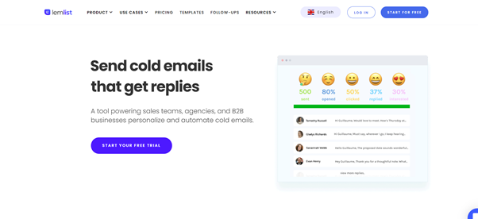

When doing business online, lead generation is an everyday challenge. You need to figure out how to generate a good amount of leads regularly to keep your sales pipeline full and healthy.
TThankfully lead generation has been a tech darling for a while, and some great tools are out there to help you do just that.
This article will cover 7 tools we think everyone should use to generate leads, there are alternatives to these, but we feel they offer the best value and user experience. We use these tools pretty much every day for inbound lead gen and outbound campaigns.
Here it comes - Top 7 best Lead Generation tools in 2021
Table of Contents
1. Reachly2. Lemlist
3. Crisp
4. Hunter.io
5. Unbounce
6. LinkedIn Sales Navigator
7. Sumo
1. Reachly
Reachly is great service to scale your outbound marketing though LinkedIn.
You can leverage our team of experts to send connection requests and message sequences to profiles that we have screen for you. And all this with a great deal of personalization and customization, so you can really start impactful conversation with your prospects.
With Reachly, you’ll be able to delegate completely the most time consuming task of LinkedIn marketing, contacting people! We’ll do it for you and reach out to up to 100 targets a day to get the best results for your campaigns.
Our service includes a set of trackable KPIs to assess your ROI and we can even integrate with various CRMs through Zapier.
We’re a true LinkedIn outreach scaling machine!
2. Lemlist
Lemlist is simply the best email outreach tool we’ve used! You can use it to set up mass emailing campaigns with an extremely high degree of personalization.
It’s perfect to send cold email to new prospects or to manage your newsletter. It has a lot a nice tech features that allow you to track your emails, their deliverability, their response rate, to automate sequences and it warm up your account before launching. It integrates with all your favourite CRMs and they produce excellent content to guide you through your email automation journey!
I particularly like the image personalization you can insert in your emails, great to differentiate!
3. Crisp
Every website needs a good support app, but Crisp provides a great too tool to meaningfully engage with your visitors!
The live chat feature allows you to set triggers to grab your visitors’ attention and start a conversation, you can also collect some information to turn them into leads and even provide instant support demos with an instant co-browsing feature!
Crisp also allows you to turn the live chat into a video call in real time and integrate a in-chat game while your visitors are waiting for a response. They really take the live chat to another level.
But it doesn’t stop there, there is a knowledge base feature to encourage self-support and the tool can send email campaigns to retarget your visitors after leaving the site to create a lead generation engine!
4. Hunter.io
Hunter is the go-to tools to find professional email addresses to drive your email outreach campaigns.
You can search for quality content about your space by using hashtags and keywords into the LinkedIn search engine and filter by posts.
The tool allows you to find verified email addresses from domain names or from a person’s first name, last name and company. You can also process bulks of data to get email addresses in lists. Ready to target!
Hunter also offers a browser plugin you can use to find out email addresses directly from a website.
5. Unbounce
Unbounce is a great tool to design and build your landing pages.
They offer a large array of customization possibilities to make your landing page exactly how you want it to be and have a good number of templates if you don’t want to start from scratch.The drag-and-drop features are great for those without any technical knowledge, you can create an unlimited number of pages and do some A/B testing to see which have the best results!
There’s a lot of resources on their website to learn how to build killer landing pages that drive tons of leads to your business.
6. LinkedIn Sales Navigator
Sales Navigator is a must have to effectively search LinkedIn’s user base. It’s targeted at salespeople, but really is useful to anyone who’s into growth and getting more leads.
It allows you to browse LinkedIn’s user base with extensive filters to find the leads you’re really looking for. You can then save those searches and build lists of leads to be targeted!
Sales navigator also comes with a dedicated inbox and some great features. One of my personal favourites is the ‘Technology’ filter that you can use to find companies that use a specific technology, which is great to target your ideal audience!
You can get a decent acceptance rate with this strategy, personally I average 64%.
7. Sumo
Sumo is a simple tool you can use to create various types of opt-in forms such as welcome mats, popups (list builder), content upgrades, and slider forms to integrate into your website.
You can also use it to create smart bars and add share buttons to your blog posts and pages.
Sumo is great to boost engagement from your visitors, maximise the time they spend on your website and generate leads from your different pages. It also integrates with various email marketing software so you can easily put all the contacts you gather into your mailing lists!
Now you have all the tools you to boost your lead generation!
We can help on the LinkedIn part, let's chat.
😉